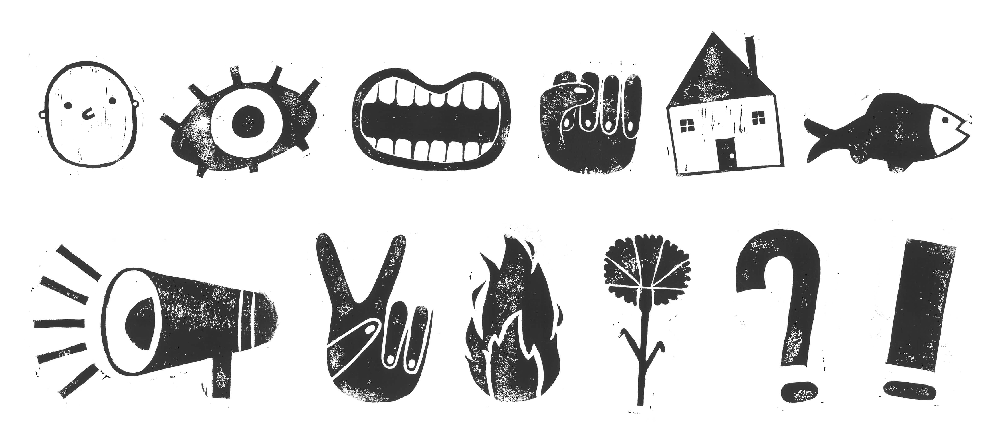
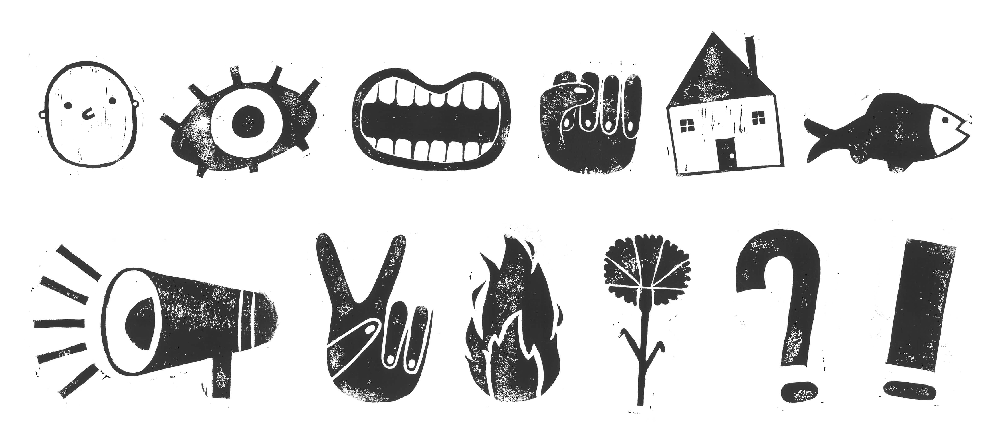
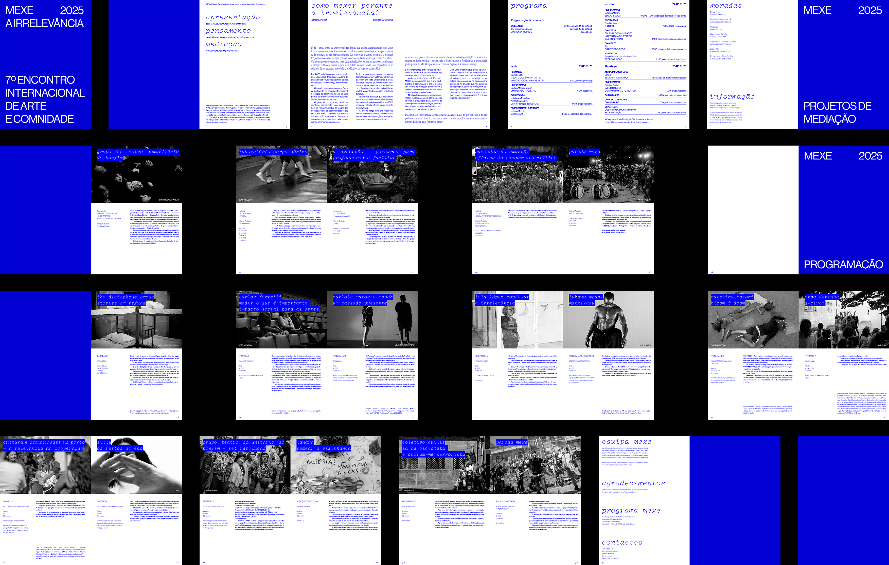
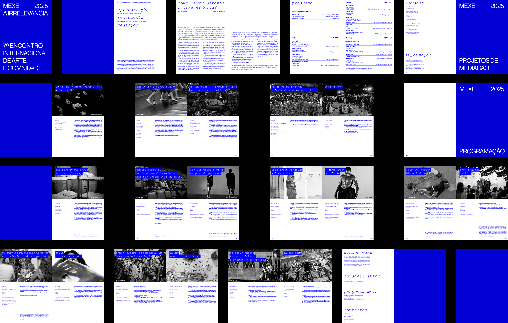

DESENHAR PROTESTOS
o cartaz como ferramenta de expressão da agência política das crianças
2024/25
A atividade Desenhar Protestos, desenvolvida com uma turma do quarto ano, favorece a reflexão através da discussão de temáticas políticas e sociais contemporâneas, e a consequente disseminação de convicções e ideias através da criação de cartazes artesanais de protesto. Este projeto foi disseminado numa plataforma digital, onde se encontra uma descrição mais aprofundada das suas motivações e registos das implementações.
 


LISTA D
liberdade, pluralismo, transformação
2025
Identidade visual desenvolvida para a Lista D, composta por um grupo de docentes das várias faculdades da Universidade do Porto e candidata ao seu conselho geral. Como mensagem, o ênfase estava na defesa da liberdade académica e da democracia. O objetivo era transmitir a pluralidade de vozes que compõem a lista e o contexto universitário.


MEXE_REMEXE
redesign da programação
2025
Esta ano decorreu a sétima edição do MEXE, Encontro Internacional de Arte e Comunidade, na cidade do Porto. Por admirar estes projetos, e desejar inserir-me, enquanto designer, em contextos culturais e comunitários, decidi repensar o design da sua programação. O design original é da autoria de Luís Cepa.

 

PARA ONDE VAI ESTE POVO?
arquivo e preservação
2025
Em colaboração com João Pestana
Com esta publicação, tencionamos promover a preservação e celebração da cultura portuguesa e a partilha de narrativas esquecidas pelo passar do tempo. Reconhecemos também o valor da representação diversificada das facetas culturais e artísticas que compõem as histórias nas quais o nosso país desencadeou a sua identidade.


THE BIAS IN ALGORITHMS
who wins, who loses, who pays
2023
Este projeto visa compreender como consumimos informação online e a forma como nos é apresentada, revelando o papel dos algoritmos de personalização neste processo. Quais serão os efeitos dos atuais desenvolvimentos tecnológicos na nossa forma de ser, de comunicar e de percepcionar a realidade? Toda a pesquisa que constitui o projeto The Bias in Algorithms está apresentada numa plataforma digital


WHAT'S ON YOUR MIND?
the poster, the post, the feed
2024
Na era pós-digital, o valor do cartaz é maioritariamente simbólico e estético. O feed, incessante e caótico, torna a informação relevante apenas quando acumulada. Este projeto explora a dualidade entre o cartaz (como elemento anunciador estático) e o post (como disseminador de qualquer informação, visualmente estimulativo e performativo), refletindo sobre o papel do feed na partilha de informação no mundo digital.